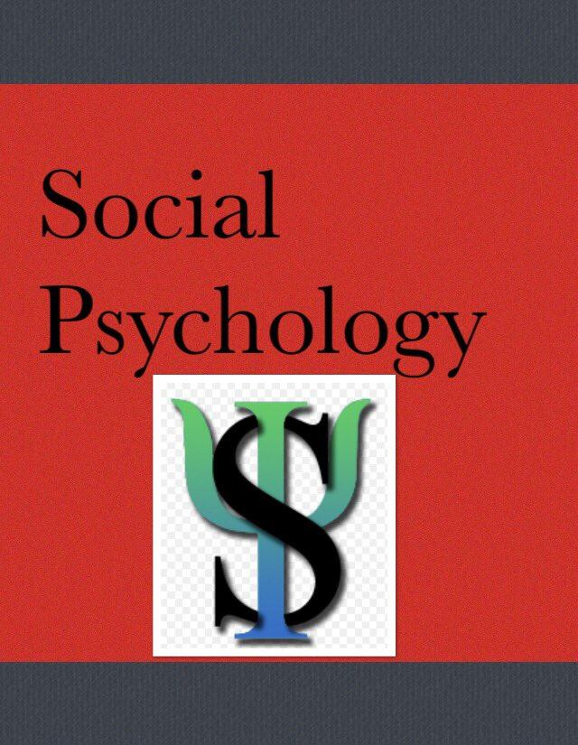
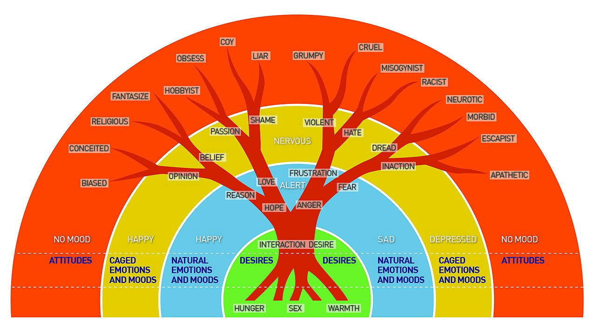
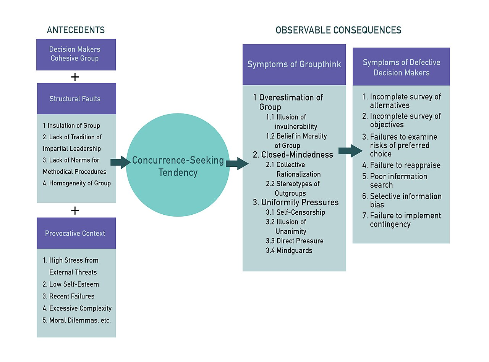
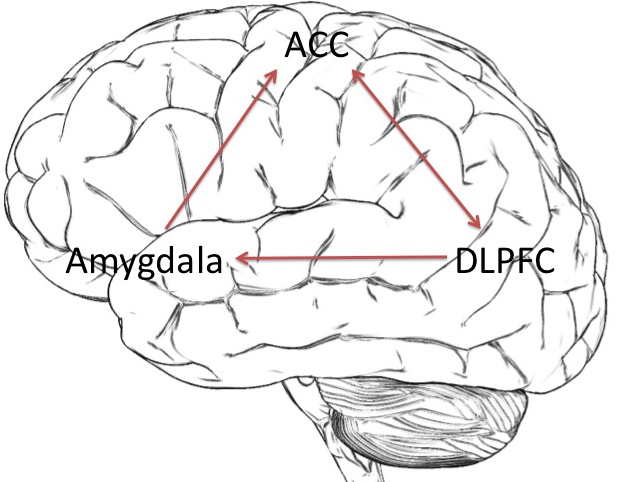
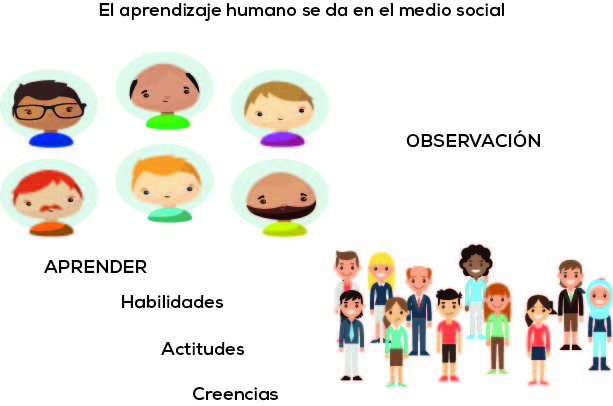

Social Psychology
You are more a product of your situations than you like to think. Social psychology is the study of how the real, imagined, or implied presence of other people shapes what we feel, believe, and do — and its most durable finding is humbling: ordinary people, in the right circumstances, will conform to an obvious falsehood, obey an authority to the point of apparent cruelty, walk past an emergency, or turn a harmless neighbor into a feared stranger. This chapter follows the arc from the quiet, everyday work of explaining behavior to the loud, high-stakes forces of the group. Along the way you will meet the studies that made the field famous — Asch's lines, Milgram's shocks, the bystanders who did nothing — and, just as importantly, what those studies teach us about steering ourselves and each other toward the better outcome.
By the end of this chapter you can
- Define attribution and explain the fundamental attribution error, the actor–observer effect, and the self-serving bias.
- Describe how attitudes relate to behavior and explain cognitive dissonance using Festinger and Carlsmith's classic study.
- Contrast the central and peripheral routes to persuasion and recognize common compliance techniques.
- Summarize what Asch found about conformity and what Milgram found about obedience, and distinguish normative from informational influence.
- Explain group phenomena including social facilitation, social loafing, groupthink, and deindividuation.
- Distinguish prejudice, stereotype, and discrimination, and explain how in-group/out-group dynamics and the contact hypothesis shape them.
- Explain the bystander effect through diffusion of responsibility, and describe the major theories of aggression.
Section 1How we explain behavior

The attribution habit
Human beings are relentless explainers. Someone cuts you off in traffic, a coworker snaps at a meeting, a stranger drops their change and keeps walking — and within a heartbeat your mind has supplied a why. That reflexive process of assigning a cause to a behavior is called attribution, a concept the Austrian psychologist Fritz Heider introduced when he described ordinary people as intuitive scientists forever testing informal theories about one another. Heider noticed that our explanations fall into two great buckets. A dispositional (or internal) attribution locates the cause inside the person — their character, ability, mood, or intent. A situational (or external) attribution locates the cause outside the person, in the circumstances pressing on them.
The distinction is not academic hair-splitting; it decides how we respond. Read a student's failing grade as laziness (dispositional) and you feel contempt; read it as a family crisis and a night shift (situational) and you feel sympathy. Whole relationships, verdicts, and public policies turn on which bucket we reach for — and, as the next idea shows, we do not reach evenly.
The fundamental attribution error
When we explain other people's behavior, we systematically overweight disposition and underweight situation. This lopsided tendency is the fundamental attribution error (FAE) — a phrase coined by Lee Ross — and it is one of the sturdiest findings in the field. In a famous demonstration, Edward Jones and Victor Harris had students read an essay that either praised or criticized Fidel Castro. Even when the readers were explicitly told that a coin flip had assigned the writer's position, they still inferred that a pro-Castro essay reflected genuinely pro-Castro attitudes. The situation was obvious, and they discounted it anyway.
Notice the asymmetry when the person under the microscope is you. The actor–observer bias is our habit of explaining our own behavior situationally while explaining the identical behavior in others dispositionally: I was late because traffic was terrible; you were late because you are disorganized. Layer on the self-serving bias — taking internal credit for our successes but blaming external forces for our failures — and a portrait emerges of a mind quietly rigged to protect its own image. The FAE is also stronger in individualist cultures, which prize the autonomous person, than in collectivist cultures, which keep the situation more firmly in view.
| Bias | Whose behavior | What we do | Everyday example |
|---|---|---|---|
| Fundamental attribution error | Another person's | Overweight disposition, underweight situation | “He's just a rude person” — ignoring his bad day |
| Actor–observer bias | Ours vs. theirs | Situational for us, dispositional for them | “I snapped because I'm stressed; she snapped because she's mean” |
| Self-serving bias | Ours | Internal for success, external for failure | “I aced it” vs. “the test was unfair” |
| Just-world bias | A victim's | Assume people get what they deserve | Blaming the victim of a crime or illness |
- Attribution is the process of assigning a cause to behavior, either dispositional (internal) or situational (external).
- The fundamental attribution error is our tendency to over-attribute others' behavior to disposition and ignore the situation.
- The actor–observer and self-serving biases both tilt explanations in a self-flattering direction.
- The FAE is stronger in individualist than collectivist cultures.
Section 2Attitudes and persuasion

What an attitude is — and when it predicts behavior
An attitude is an evaluation — favorable or unfavorable — of a person, object, or idea, and it braids together three strands: a cognitive component (beliefs), an affective component (feelings), and a behavioral component (tendencies to act). We assume attitudes drive behavior, and often they do, but the link is looser than intuition suggests. In a classic 1930s demonstration, Richard LaPiere toured the United States with a young Chinese couple and was refused service only once, yet when he later wrote to those same establishments asking whether they would serve Chinese guests, over ninety percent said no. Stated attitude and actual behavior diverged completely. Attitudes predict behavior best when they are strong, specific to the action in question, based on direct experience, and when situational pressures are weak.
Cognitive dissonance: when actions rewrite attitudes
Usually we expect attitudes to shape behavior. One of the field's most important insights is that the arrow also runs backward: behavior shapes attitudes. Leon Festinger's theory of cognitive dissonance holds that we feel an uncomfortable tension whenever we notice an inconsistency between two beliefs, or between a belief and an action — and we are motivated to reduce that tension, often by quietly changing the attitude to match what we already did.
The proof is a beautifully simple 1959 experiment by Festinger and James Carlsmith. Participants spent an hour on a mind-numbing task — turning pegs, over and over — then were paid to tell the next person that it had been fun. Some were paid twenty dollars to lie, others just one dollar. Later, asked how enjoyable the task really was, the twenty-dollar group admitted it was dull, but the one-dollar group insisted it had been genuinely interesting. Why the reversal? The twenty-dollar liars had plenty of external justification — “I did it for the money” — so they felt no dissonance. The one-dollar liars had no such excuse, so the only way to resolve “I said it was fun” against “it was boring” was to decide it had actually been fun. Insufficient justification for our own behavior is a powerful engine of genuine attitude change.
Two roads to persuasion
Persuasion is the deliberate attempt to change an attitude, and the elaboration likelihood model of Richard Petty and John Cacioppo maps two routes it can travel. The central route works through the content of an argument — evidence, logic, quality of reasoning — and persuades people who are motivated and able to think carefully; the attitude change it produces is durable and resistant. The peripheral route works through cues around the argument — an attractive spokesperson, a celebrity endorsement, sheer repetition, the number (not strength) of arguments — and persuades people who are distracted, rushed, or uninterested; its effects are shallower and fade faster. Advertisers exploit both: a pharmaceutical ad packs in central-route data for the physician and peripheral-route smiling actors for everyone else.
Persuasion also has a foot-in-the-door literature of compliance techniques — scripts that raise the odds of a yes. In the foot-in-the-door technique (documented by Freedman and Fraser), agreeing to a small request makes you far more likely to grant a larger one later, because you have already come to see yourself as the kind of person who helps. Its mirror image, the door-in-the-face technique, opens with an outrageous request you will refuse, then follows with the smaller one the persuader wanted all along, which now feels like a reasonable concession.
| Feature | Central route | Peripheral route |
|---|---|---|
| Persuades through | Strength of the argument itself | Surface cues — source, attractiveness, repetition |
| Audience | Motivated & able to think it through | Distracted, rushed, or uninvested |
| Result | Lasting, resistant to counter-argument | Temporary, easily reversed |
| Typical use | Expert briefings, informed decisions | Impulse ads, jingles, celebrity endorsements |
- An attitude has cognitive, affective, and behavioral parts; it predicts behavior best when strong, specific, and situational pressure is low.
- Cognitive dissonance is discomfort from inconsistency; we often resolve it by changing the attitude to fit the action (Festinger & Carlsmith's one-dollar effect).
- The central route persuades through argument quality; the peripheral route through surface cues.
- Foot-in-the-door and door-in-the-face are compliance techniques that leverage commitment and concession.
Section 3Conformity and obedience

Conformity: Asch and the power of the majority
Conformity is adjusting our behavior or opinions to match a group standard. In the early 1950s Solomon Asch devised a test so simple it seems impossible to fail: participants judged which of three comparison lines matched a standard line, an easy perceptual task with an obvious answer. The twist was that the other people in the room were confederates instructed to give the same wrong answer on certain trials. Faced with a unanimous majority contradicting the plain evidence of their eyes, about seventy-five percent of real participants conformed to the wrong answer at least once, and across the critical trials people went along with the group roughly a third of the time.
Why cave to an answer you can see is wrong? Asch's work exposed two distinct engines. Normative social influence is conforming to be liked and accepted — you know the group is wrong but you do not want to stand out. Informational social influence is conforming because you assume the group knows something you do not — it is a genuine change of mind, powerful in ambiguous situations. Muzafer Sherif had already shown the informational kind using the autokinetic effect, in which people watching a stationary point of light in a dark room gradually converged on a shared estimate of how far it “moved.” Asch also found conformity collapses when even a single ally breaks the unanimity — the lone dissenter's greatest gift is company.
Obedience: Milgram and the man in the lab coat
Conformity yields to peers; obedience yields to authority. In the most disquieting studies psychology has produced, Stanley Milgram — working at Yale in the shadow of the Nuremberg trials — told volunteers they were in a learning experiment and assigned them the role of “teacher.” Each time a “learner” (a confederate) missed a question, the teacher was ordered to deliver an electric shock, rising in fifteen-volt steps from a labeled 15 volts up to a final switch marked 450 volts — XXX. No shocks were real, but the teachers did not know that. As the learner cried out, pleaded, complained of a heart condition, and finally went silent, an experimenter in a gray coat calmly insisted “the experiment requires that you continue.” Milgram expected almost no one to reach the end. Instead about sixty-five percent of ordinary participants obeyed all the way to 450 volts.
The result is not a story about monsters; it is a story about situations. Obedience climbed when the authority seemed legitimate and physically present, when the institution carried prestige, when responsibility could be handed upward (“I was just following orders”), and when the victim was distant. It fell sharply when the learner was in the same room, when the experimenter gave orders by phone, or when other “teachers” refused. The controversial Stanford Prison Experiment led by Philip Zimbardo pointed the same direction — that assigned roles and situations can rapidly reshape behavior — though its methods and conclusions are now sharply debated.
The group as a force of its own
Groups do more than pressure their members toward a norm; they change how those members perform, exert effort, and decide. When a task is easy or well-practiced, the mere presence of others improves performance — social facilitation, first glimpsed by Norman Triplett's cyclists and explained by Robert Zajonc as arousal strengthening our dominant response; on hard or novel tasks that same arousal makes us worse. When individual effort is pooled and unaccountable, people slack — social loafing, the reason a committee of eight often does the work of three. Immersed in a large, anonymous, aroused crowd, people can lose self-awareness and restraint altogether — deindividuation, the psychology behind mob behavior. And in the conference room, tightly knit groups chasing consensus can suppress dissent and misjudge reality — Irving Janis named this groupthink and traced it through fiascos like the Bay of Pigs. A related effect, group polarization, shows that discussion among like-minded people does not moderate their views but pushes them to a more extreme version of where they already leaned.
| Phenomenon | What happens | Signature study / figure |
|---|---|---|
| Conformity | Match the group even against clear evidence | Asch's line judgments (~37% of trials) |
| Obedience | Follow an authority's harmful orders | Milgram (~65% to 450 V) |
| Social facilitation | Others' presence aids easy, hurts hard tasks | Triplett; Zajonc |
| Social loafing | Less effort when effort is pooled & unaccountable | Ringelmann's rope; Latané |
| Groupthink | Consensus-seeking crushes realistic appraisal | Janis (Bay of Pigs) |
- Asch showed strong majority conformity even on an obvious task; a single ally sharply reduces it.
- Normative influence is conforming to fit in; informational influence is conforming because you assume others know better.
- Milgram found ~65% of people obeyed an authority to a supposedly lethal 450 volts; obedience is driven by the situation, not evil disposition.
- Social facilitation, social loafing, deindividuation, groupthink, and group polarization are ways groups reshape individual behavior.
Section 4Prejudice and stereotypes

Three cousins: prejudice, stereotype, discrimination
These three words are often used interchangeably, but keeping them straight is the foundation of the topic. A stereotype is a belief — a generalized idea about the members of a group (“accountants are dull,” “athletes are unintelligent”). Prejudice is an attitude — a prejudged, usually negative feeling toward a group and its members, complete with the emotional charge an attitude carries. Discrimination is behavior — the unjust action of treating people differently because of their group membership. Map them onto the three-part structure of an attitude and they line up cleanly: stereotype is the thought, prejudice is the feeling, discrimination is the deed. They tend to travel together, but not always: someone can hold a stereotype without acting on it, and anti-discrimination laws target the behavior precisely because the belief and feeling are harder to legislate.
In-groups, out-groups, and the ease of “us versus them”
Prejudice is fed by a mental move so basic it needs no teaching: we divide the social world into the in-group (“us”) and the out-group (“them”). From that split flow predictable distortions. In-group bias is our tendency to favor, trust, and reward our own; out-group homogeneity is the illusion that “they are all alike” while “we” are richly varied. Henri Tajfel's social identity theory showed how little it takes to trigger this: in the minimal group paradigm, people sorted into groups by something as trivial as a coin toss or a preference for one painter over another promptly began favoring their own group in the distribution of rewards. Because part of our self-esteem is bound up in the groups we belong to, boosting the in-group and derogating the out-group props up how we feel about ourselves. Add competition for scarce resources or a frustrating threat, and the out-group is easily cast as a scapegoat — a target on which to unload blame.
Reducing prejudice
If groups make prejudice, can they also unmake it? Gordon Allport's contact hypothesis proposed that bringing groups together reduces prejudice — but only under specific conditions: the groups must have equal status in the situation, pursue common goals, cooperate rather than compete, and enjoy the support of authorities or law. Mere proximity is not enough and can even worsen things. Muzafer Sherif's Robbers Cave study demonstrated the cure directly: two warring groups of boys at a summer camp reconciled only when the experimenters imposed superordinate goals — problems, like a broken water supply, that neither group could solve alone. In the classroom, Elliot Aronson's jigsaw technique builds the same cooperative interdependence into learning, assigning each student a piece of material the others need, so that success requires reaching across group lines.
| Term | Type | Definition | Example |
|---|---|---|---|
| Stereotype | Belief (cognitive) | Generalized idea about a group's members | “Older workers can't learn new tools” |
| Prejudice | Attitude (affective) | Prejudged, usually negative feeling toward a group | Disliking someone before meeting them |
| Discrimination | Behavior | Unjust differential treatment based on group | Refusing to hire based on ethnicity |
- Stereotype (belief), prejudice (attitude/feeling), and discrimination (behavior) are distinct but linked.
- In-group bias and out-group homogeneity follow from dividing the world into “us” and “them”; even trivial groupings trigger favoritism (minimal group paradigm).
- The contact hypothesis reduces prejudice under equal status, common goals, cooperation, and institutional support.
- Superordinate goals (Robbers Cave) and the jigsaw classroom harness cooperative interdependence to dissolve group hostility.
Section 5Helping and hurting

Prosocial behavior and altruism
Prosocial behavior is any action intended to benefit another person, from holding a door to donating a kidney. Its purest form is altruism — helping motivated by genuine concern for another's welfare, even at a cost to oneself and with no expectation of reward. Whether truly selfless helping exists has been debated for a century. Daniel Batson's empathy–altruism hypothesis argues that when we feel empathy for someone, we help for their sake rather than our own; skeptics counter that we help to relieve our own distress or to earn social credit. Evolutionary accounts add two more motives that need no conscious calculation: kin selection (we favor those who share our genes) and reciprocal altruism (helping today buys help tomorrow).
The bystander effect
Common sense says the more people who witness an emergency, the likelier someone will help. The truth is the opposite. The bystander effect — the finding that individuals are less likely to help when others are present — grew out of the 1964 murder of Kitty Genovese in New York, reportedly witnessed by many neighbors who did not intervene. (Later reporting revised the lurid details, but the puzzle it launched was real.) Bibb Latané and John Darley ran the experiments that explained it. In one, participants who believed they were the only witness to a seizure helped almost every time; those who thought several others were also listening helped far less and far more slowly.
Two mechanisms do the work. Diffusion of responsibility means that as the number of bystanders rises, each person's felt obligation shrinks — “someone else will handle it.” Pluralistic ignorance means we look to the calm faces of others to decide whether a situation is truly an emergency, and since everyone is doing the same, collective inaction masquerades as collective judgment that nothing is wrong. Latané and Darley folded these into a five-step model in which a bystander must (1) notice the event, (2) interpret it as an emergency, (3) assume personal responsibility, (4) know how to help, and (5) decide to act — and helping fails if any step breaks. The practical antidote is to defeat diffusion directly: single out one person (“you, in the red jacket, call 911”).
Aggression
If helping is one edge of social behavior, aggression — behavior intended to harm another who is motivated to avoid it — is the other. Psychologists distinguish hostile aggression, driven by anger and aimed at inflicting pain, from instrumental aggression, a cold means to some other end. Its causes are layered. Biology contributes through the amygdala, testosterone, and low serotonin. The classic frustration–aggression hypothesis (Dollard and colleagues, later refined by Leonard Berkowitz) holds that blocked goals breed aggression, especially when aggressive cues are present — Berkowitz's weapons effect showed the mere sight of a gun can raise aggressive responding. And Albert Bandura's celebrated Bobo doll experiments proved that aggression is learned: children who watched an adult punch and kick an inflatable doll later imitated those exact acts, showing that observation and modeling — not just frustration or instinct — transmit violence, a finding that anchors ongoing debates about media and real-world aggression.
| Step in helping | What must happen | What blocks it |
|---|---|---|
| 1. Notice | Attend to the event | Distraction, hurry, crowded scene |
| 2. Interpret | Read it as a real emergency | Pluralistic ignorance — others look calm |
| 3. Take responsibility | Feel it's your job to act | Diffusion of responsibility in a crowd |
| 4. Know how | Have the skills or knowledge to help | Feeling unqualified |
| 5. Decide to help | Weigh costs and act | Fear, cost, ambiguity |
- Prosocial behavior benefits others; altruism is helping for another's sake, explained by empathy (Batson), kin selection, and reciprocity.
- The bystander effect means people help less as more witnesses are present, via diffusion of responsibility and pluralistic ignorance.
- Latané and Darley's five-step model shows helping can fail at any stage; naming a specific helper defeats diffusion.
- Aggression arises from biological factors, frustration (Berkowitz), and observational learning (Bandura's Bobo doll).
The chapter in one breath
- Attribution assigns behavior to disposition or situation, and the fundamental attribution error makes us over-blame the person and ignore the situation — the theme running through the whole chapter.
- Attitudes predict behavior only loosely; cognitive dissonance shows behavior can rewrite attitudes, as in Festinger and Carlsmith's one-dollar effect.
- Persuasion travels a central route (argument quality, lasting) or a peripheral route (surface cues, temporary); compliance techniques like foot-in-the-door leverage commitment.
- Asch demonstrated majority conformity; Milgram demonstrated that ~65% obey an authority to a supposedly lethal shock — power of the situation, not evil people.
- Groups reshape members through social facilitation, social loafing, deindividuation, groupthink, and group polarization.
- Stereotype (belief), prejudice (feeling), and discrimination (behavior) grow from in-group/out-group sorting; the contact hypothesis and superordinate goals reduce them.
- Prosocial behavior and the bystander effect hinge on diffusion of responsibility, while aggression reflects biology, frustration, and Bandura's observational learning.
ReferenceWords worth knowing
A quick reference for the terms in this chapter — skim it now, or circle back whenever a word trips you up.
- Altruism
- Helping motivated by genuine concern for another's welfare, at a cost to oneself and without expectation of reward.
- Attitude
- A favorable or unfavorable evaluation of a person, object, or idea, with cognitive, affective, and behavioral components.
- Attribution
- The process of explaining the cause of a behavior as either dispositional (internal) or situational (external).
- Bystander effect
- The tendency for an individual to be less likely to help in an emergency when other people are present.
- Central route to persuasion
- Persuasion through the strength and content of an argument, producing lasting attitude change.
- Cognitive dissonance
- The uncomfortable tension from holding inconsistent beliefs, or acting against a belief, which motivates attitude change.
- Conformity
- Adjusting one's behavior or opinions to match those of a group.
- Contact hypothesis
- Allport's idea that intergroup contact reduces prejudice under equal status, common goals, cooperation, and institutional support.
- Deindividuation
- The loss of self-awareness and restraint that can occur in large, anonymous, aroused groups.
- Diffusion of responsibility
- The reduced sense of personal obligation to act as the number of bystanders increases.
- Discrimination
- Unjust behavior that treats people differently because of their group membership.
- Foot-in-the-door technique
- A compliance tactic in which agreeing to a small request increases willingness to grant a larger one later.
- Fundamental attribution error
- The tendency to overestimate dispositional causes and underestimate situational ones when explaining others' behavior.
- Groupthink
- Faulty decision-making in a cohesive group whose desire for consensus overrides realistic appraisal of alternatives.
- In-group bias
- The tendency to favor and give preferential treatment to members of one's own group.
- Normative social influence
- Conforming to a group in order to be liked or accepted, rather than because one believes the group is correct.
- Obedience
- Changing behavior in response to a direct command from a person of authority.
- Peripheral route to persuasion
- Persuasion through surface cues around an argument — source, attractiveness, or repetition — producing shallow, easily reversed attitude change.
- Prejudice
- A prejudged, usually negative attitude and feeling directed toward a group and its members.
- Prosocial behavior
- Any voluntary action intended to benefit another person.
- Self-serving bias
- Attributing one's successes to internal factors and one's failures to external factors.
- Social loafing
- The tendency to exert less effort on a task when individual contributions are pooled and unaccountable.
- Stereotype
- A generalized belief about the characteristics of the members of a group.